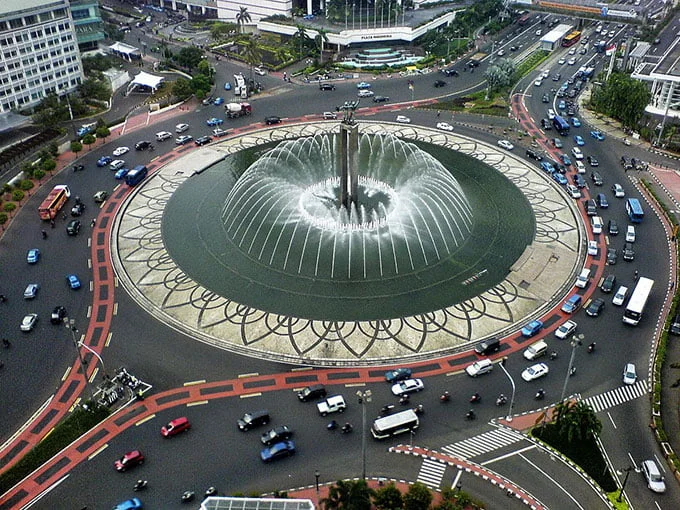
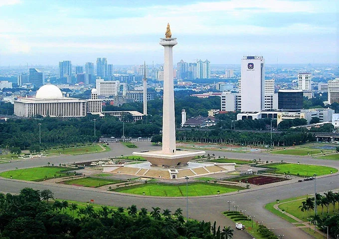
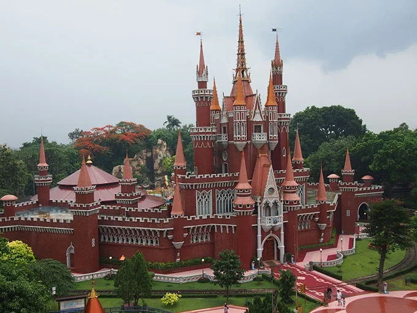

Sejarah

Jakarta mengawali sejarahnya sebagai kota pelabuhan yang bernama “Sunda Kelapa” pada masa kerajaan Hindu Pajajaran. Pada tahun 1552 bangsa Portugis tiba di Sunda Kelapa atas utusan Gubernur malaka dan merupakan bangsa barat yang
pertama datang ke Sunda Kelapa. Dengan tujuan meminta izin untuk mendirikan benteng pertahanan di dekat muara Sungai Ciliwung. Setelah berhasil mengadakan perjanjian dengan penguasa Sunda Kelapa Bangsa Portugis kembali ke
Malaka.
Pada 1527 bangsa Portugis kembali ke Sunda Kelapa namun tanpa diketahui Sunda Kelapa telah jatuh ke tangan Fatahillah dan bangsa Portugis berusaha merebut kembali Sunda Kelapa. Maka terjadilah pertempuran antara bangsa Portugis
dan Fatahillah di sekitar t eluk Jakarta. Atas pertemuan ini Fatahillah menang dan mengubah nama Sunda Kelapa menjadi Jayakarta. Cornelis De Houtman datang (1596) dan mendirikan VOC (1619). Nama Jayakarta diganti menjadi Batavia
dibawah pimpinan Belanda ± 350 tahun kekuasaannya di Indonesia. Belanda takluk kepada Jepang (1942), kemudian Batavia diganti nama menjadi Jakarta.
Geografis

Provinsi DKI Jakarta terletak disebelah Selatan Laut Jawa, sebelah Timur berbatasan dengan Kabupaten/Kota Bekasi, sebelah Selatan dengan Kabupaten/Kota Bogor dan Depok serta sebelah Barat dengan Kabupaten/Kota Tangerang. Lokasi
Provinsi DKI Jakarta yang strategis di Kepulauan Indonesia menjadikan Jakarta pintu gerbang utama dalam perdagangan antar pulau dan hubungan Internasional dengan pelabuhan utamanya Tanjung Priok dan Bandara Soekarno Hatta.
Jumlah penduduk Provinsi DKI Jakarta 9,041 juta jiwa dengan kepadatan penduduk 13.667,01 jiwa per km2. Jakarta beriklim tropis, dengan suhu tahunan rata-rata 27°C dengan kelembaban 80-90%. Karena terletak di dekat garis
khatulistiwa, arah angin dipengaruhi oleh angin musim. Angin musim barat bertiup antara November dan April, sedang angin musim timur antara Mei dan Oktober. Curah hujan rata-rata 2.000 mm, curah hujan paling besar sekitar bulan
Januari dan paling kecil pada bulan September.
Wisata
Jakarta merupakan salah satu destinasi yang paling digandrungi di Indonesia. Banyak sekali wisatawan, baik dalam maupun luar kota, yang datang ke ibu kota hanya untuk menikmati berbagai tempat wisata Jakarta. Hal ini tak
mengherankan karena terdapat beragam jenis kawasan wisata Jakarta, baik itu wisata alam maupun wisata buatan.
Wisata Kota Tua Jakarta

Ingin menikmati Jakarta dengan vibes tempo dulu? Datanglah ke sekeliling area Kota Tua Jakarta dan rasakan nuansa jadul Kota Jakarta tanpa perlu merogoh kocek sedikitpun alias gratis. Banyak sekali fasilitas menarik lain di
tempat wisata Jakarta kota ini, seperti museum, cafe, dan lain-lain.
Taman Mini Indonesia Indah

Destinasi yang satu ini cocok untuk Anda yang ingin berwisata dengan unsur budaya Indonesia. TMII menawarkan pemandangan kebudayaan bangsa yang mencakup aneka busana dan tarian daerah, miniatur kepulauan Indonesia, kereta
gantung, museum, dan lain-lain. Anda cukup merogoh kocek sebesar Rp20.000,00 per orang untuk tiket pintu masuk (belum termasuk tiket lain-lain). Taman wisata Jakarta Timur ini buka setiap hari mulai Senin-Minggu mulai pukul
07.00 WIB hingga 19.00 WIB.